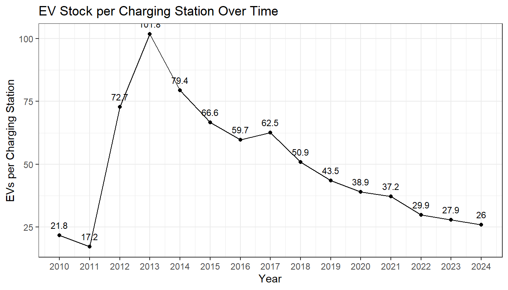
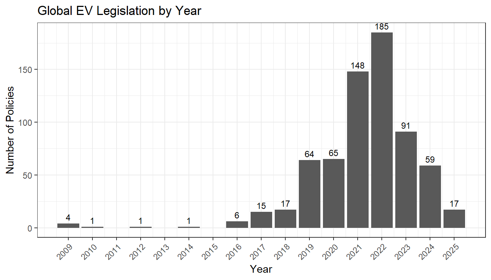

| Year | Total EV Stock | Charging Stations | EVs per Station |
|---|---|---|---|
| 2010 | 87,348 | 4,010 | 21.78 |
| 2011 | 186,252 | 10,830 | 17.20 |
| 2012 | 2,225,623 | 30,600 | 72.73 |
| 2013 | 4,539,265 | 44,600 | 101.78 |
| 2014 | 7,491,796 | 94,300 | 79.45 |
| 2015 | 10,859,732 | 163,000 | 66.62 |
| 2016 | 15,410,758 | 258,000 | 59.73 |
| 2017 | 20,761,700 | 332,000 | 62.54 |
| 2018 | 27,999,450 | 550,000 | 50.91 |
| 2019 | 38,293,971 | 880,000 | 43.52 |
| 2020 | 49,448,225 | 1,270,000 | 38.94 |
| 2021 | 65,800,427 | 1,770,000 | 37.18 |
| 2022 | 80,898,940 | 2,710,000 | 29.85 |
| 2023 | 111,425,565 | 4,000,000 | 27.86 |
| 2024 | 140,210,558 | 5,400,000 | 25.96 |
Charging Infrastructure and EV Policy Trends
Data Provenance
The data used in this section comes from two files: EVDataExplorer2025.xlsx - GEVO_EV_2025.csv and Global EV Policy Explorer - Sheet1.csv. The EV data includes information about electric vehicle stock, charging points, region, category, mode, year, and unit. The policy data includes information about global electric vehicle policies and the year each policy was announced.
For this section, I focused on global historical EV stock and EV charging point data. I also used the policy dataset to explore how the number of EV-related policies changed over time. Together, these datasets help connect electric vehicle adoption, charging infrastructure, and policy activity.
FAIR and CARE Principles
The EV and policy datasets mostly follow the FAIR principles because they are structured, readable in R, and include variables that can be filtered, grouped, and reused for analysis. The datasets are accessible and reusable because they are stored in common file formats and include information such as year, region, parameter, and policy announcement year. However, some cleaning is still required because column names and variable meanings need to be interpreted carefully before analysis.
The CARE principles are less directly involved because the datasets focus on global transportation and policy trends rather than individual or sensitive community-level data. However, the data can still support collective benefit by helping researchers and policymakers understand how infrastructure and policy development relate to electric vehicle adoption.
Methods and Paradigms
This section follows an Exploratory Data Analysis paradigm because it investigates patterns in EV stock, charging stations, and policy activity over time before making formal conclusions. The goal is to understand what is happening in the data through summaries, visualizations, and comparisons.
The coding workflow uses the Tidyverse paradigm because its pipe-based syntax makes the data cleaning, joining, summarizing, and visualization steps easier to read and reproduce.
Data Preparation
For this analysis, I filtered the EV dataset to include only historical global records. I then separated EV charging points and EV stock into two smaller datasets, summarized each by year, and joined them together. After joining the datasets, I created a new variable called ev_per_station, which measures the number of electric vehicles per charging station.
Results
Table Table 1 shows global EV stock, charging stations, and the number of EVs per charging station over time. The ev_per_station variable helps compare EV growth with infrastructure growth. A higher value means that there are more electric vehicles for each charging station, which may suggest greater pressure on charging infrastructure.

Figure Figure 1 shows how the number of EVs per charging station changed over time. This ratio is useful because EV adoption depends not only on how many electric vehicles are sold, but also on whether charging infrastructure expands enough to support them. If the ratio rises sharply, it may suggest that EV stock is growing faster than charging availability.

Figure Figure 2 shows the number of global EV policies announced by year. This visualization helps connect EV adoption with policy activity. Years with more policy announcements may reflect increased government attention toward electric vehicle adoption, charging infrastructure, and emissions reduction goals.
Overall, this section suggests that electric vehicle adoption should be understood alongside both charging infrastructure and policy activity. EV stock growth alone does not fully describe adoption, because infrastructure availability and policy support also shape how practical and sustainable EV growth can be over time.